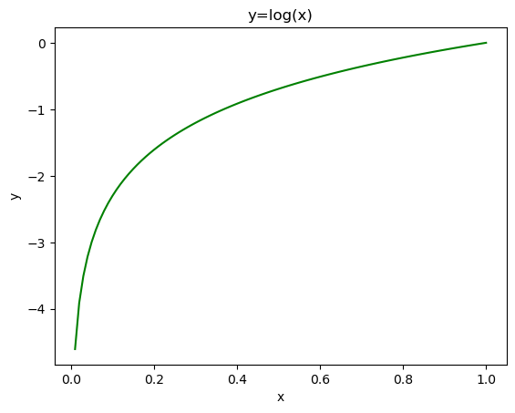
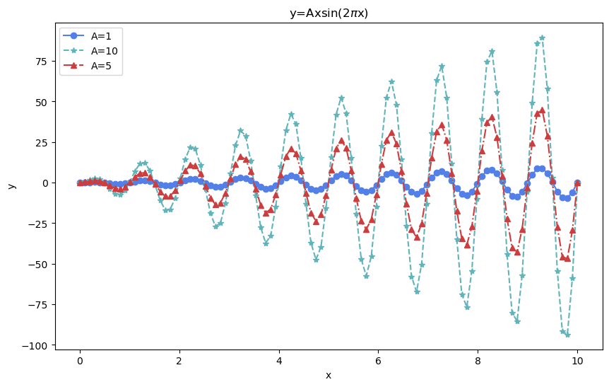
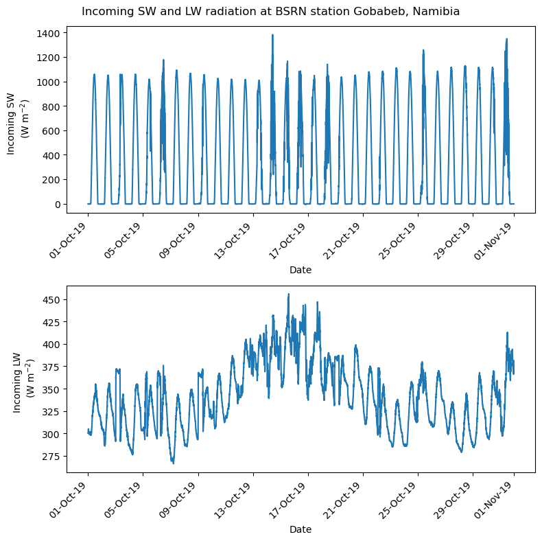
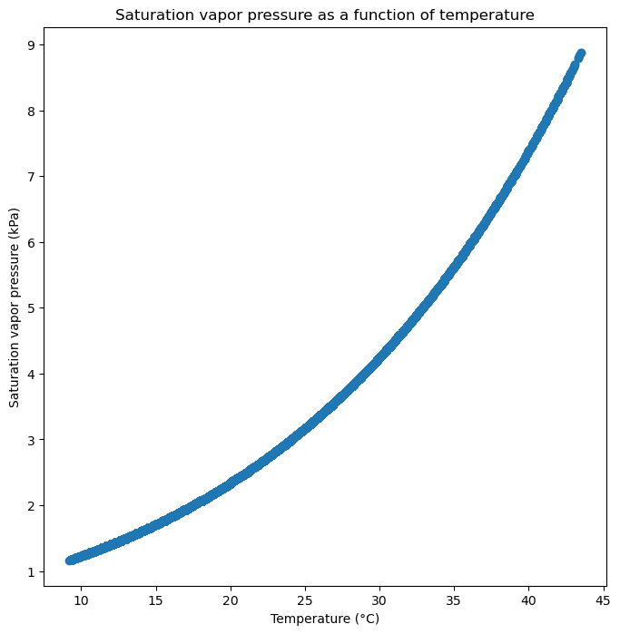
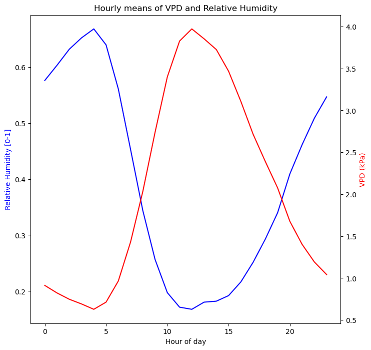

Code
import pandas as pd
import matplotlib.pyplot as plt
import matplotlib.dates as mdates
Don’t forget to start your notebook with a cell containing the import statements you need for the session.
import pandas as pd
import matplotlib.pyplot as plt
import matplotlib.dates as mdatesRecreate the plot below. You do not need to match the colors exactly, but do not rely on matplotlib defaults. Note: do not worry about the equation(s); these are included to indicate which functions to plot.

# Plot y=log(x) in green
x = np.linspace(.01, 1, 100)
y = np.log(x)
fig, ax = plt.subplots()
ax.plot(x, y, 'g-')
ax.set_title('y=log(x)')
ax.set_xlabel('x')
ax.set_ylabel('y')
plt.show()
Recreate the plot below. You do not need to match the colors exactly, but do not rely on matplotlib defaults. Note: do not worry about the equation(s); these are included to indicate which functions to plot.

# Plot a series of three sine waves, with amplitudes 1, 10, and 5, in different colors from 0-10(1.0, 0.0, 0.0)def rgb(r, g, b):
return (r/255, g/255, b/255)
x = np.linspace(0, 10, 100)
y1 = 1 * x* np.sin(2*np.pi*x)
y2 = 10 * x * np.sin(2*np.pi*x)
y3 = 5 * x * np.sin(2*np.pi*x)
fig, ax = plt.subplots(figsize=(10, 6))
ax.plot(x, y1, '-', label='A=1', marker='o', color=rgb(83,127,232))
ax.plot(x, y2, '--', label='A=10', marker='*', color=rgb(97,180,186))
ax.plot(x, y3, '-.', label='A=5', marker='^', color=rgb(205,61,62))
# add markers to the plot
ax.set_title('y=Axsin(2$\pi$x)')
ax.set_xlabel('x')
ax.set_ylabel('y')
ax.legend()
plt.show()
Import the data from ./data/BSRN_data.csv and plot the temperature and relative humidity over the month of October 2019 at the BSRN station. Be sure to format the timestamps and include axis labels, a title, and a legend, if necessary.
# Import data
bsrn = pd.read_csv('../data/BSRN_GOB_2019-10.csv',index_col=0,parse_dates=True)
# Initialize empty figure and axes
fig = plt.figure(figsize=(8,8))
# Create two subplots in a 1x2 grid:
# 1. Incoming SW radiation
# 2. Incoming LW radiation
ax1 = fig.add_subplot(2,1,1)
ax2 = fig.add_subplot(2,1,2)
# Filter data for October 2019:
bsrn = bsrn.loc['2019-10-01':'2019-10-31']
# Plot incoming SW radiation for October 2019:
ax1.plot(bsrn.index,bsrn.SWD_Wm2)
# Plot incoming LW radiation
ax2.plot(bsrn.index,bsrn.LWD_Wm2)
# Label y-axes
ax1.set_ylabel("Incoming SW \n (W m$^{-2}$)")
ax2.set_ylabel("Incoming LW \n (W m$^{-2}$)")
# Format timestamps
ax1.xaxis.set_major_formatter(mdates.DateFormatter('%d-%b-%y'))
ax2.xaxis.set_major_formatter(mdates.DateFormatter('%d-%b-%y'))
# Format and rotate ticks
plt.setp(ax1.get_xticklabels(), rotation=45, fontsize=10, ha='right')
plt.setp(ax2.get_xticklabels(), rotation=45, fontsize=10, ha='right')
# Label x-axes
ax1.set_xlabel('Date')
ax2.set_xlabel('Date')
# Set figure title
fig.suptitle('Incoming SW and LW radiation at BSRN station Gobabeb, Namibia')
# Show figure
fig.tight_layout()
plt.show()
Saturation vapor pressure, ( $ e^*(T_a) $ ), is the maximum pressure of water vapor that can exist in equilibrium above a flat plane of water at a given temperature. It can be calculated from the Tetens equation:
e^{*}(T_{a}) = a \times exp({\frac{b \cdot T_{a}}{T_{a} + c}})
where $ T_a $ is the air temperature in °C, $ a = 0.611 $ kPa, $ b = 17.502 $, and $ c = 240.97 °C $.
bsrn.
# 1. Calculate saturation vapor pressure in kPa for a T_degC column in bsrn and assign it to a new column 'e_sat_kPa'
import numpy as np
bsrn['e_sat_kPa'] = 0.611 * np.exp((17.502 * bsrn.T_degC) / (bsrn.T_degC + 240.97))
# 2. Create a scatterplot of temperature versus stauration vapor pressure. Be sure to format the x-axis ticks as dates.
fig = plt.figure(figsize=(8,8))
ax = fig.add_subplot(1,1,1)
plt.scatter(bsrn.T_degC,bsrn.e_sat_kPa)
# set xlabel
ax.set_xlabel('Temperature (°C)')
# set ylabel
ax.set_ylabel('Saturation vapor pressure (kPa)')
# set title
ax.set_title('Saturation vapor pressure as a function of temperature')
# show the figure
plt.show()

The difference between saturation vapor pressure and ambient air pressure is called vapor pressure deficit, \textit{VPD}. \textit{VPD} can be calculated from saturation vapor pressure and relative humidity, h_r, as follows: \textit{VPD} \, = \, e^*(T_a) \cdot (1 \, - \, h_r) where h_r is expressed as a fraction.

# Calulate VPD in kPa for bsrn data:
bsrn['VPD_kPa'] = bsrn.e_sat_kPa * (1 - bsrn.RH/100)
# For each hour in the day, calculate the monthly means
bsrn_hourly = bsrn.groupby(bsrn.index.hour).mean()
# plot the hourly means of VPD and e_sat_kPa. Use ax.twinx() to plot both variables on the same axes.
fig = plt.figure(figsize=(8,8))
ax = fig.add_subplot(1,1,1)
ax2 = ax.twinx()
ax.plot(bsrn_hourly.index,bsrn_hourly.RH/100,color='blue')
ax2.plot(bsrn_hourly.index,bsrn_hourly.VPD_kPa,color='red')
# set xlabel
ax.set_xlabel('Hour of day')
# set ylabel
ax2.set_ylabel('VPD (kPa)',color='red')
ax.set_ylabel('Relative Humidity [0-1]',color='blue')
# set title
ax.set_title('Hourly means of VPD and Relative Humidity')
# show the figure
Text(0.5, 1.0, 'Hourly means of VPD and Relative Humidity')